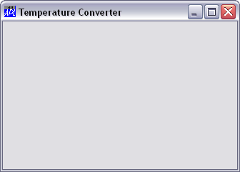

The first task is to create a Form which is to act as the main window for our application. We will call the Form 'TEMP' and give it a title (Caption) of "Temperature Converter".
We will position the Form 68% down and 50% along the screen. This will avoid it interfering with the APL Session Window, and make development easier.
The Form will have a height equal to 30% of the height of the screen, and a width of 40% of the screen width.
TITLE←'Temperature Converter' 'TEMP' ⎕WC 'Form' TITLE (68 50)(30 40)
